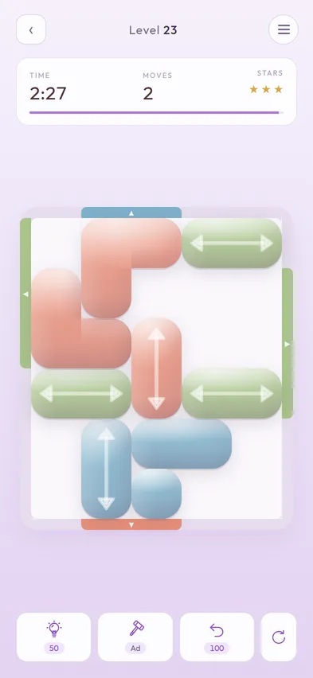
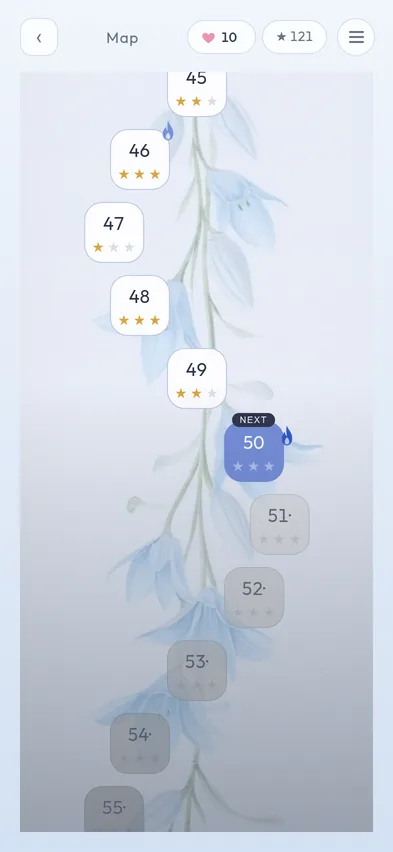
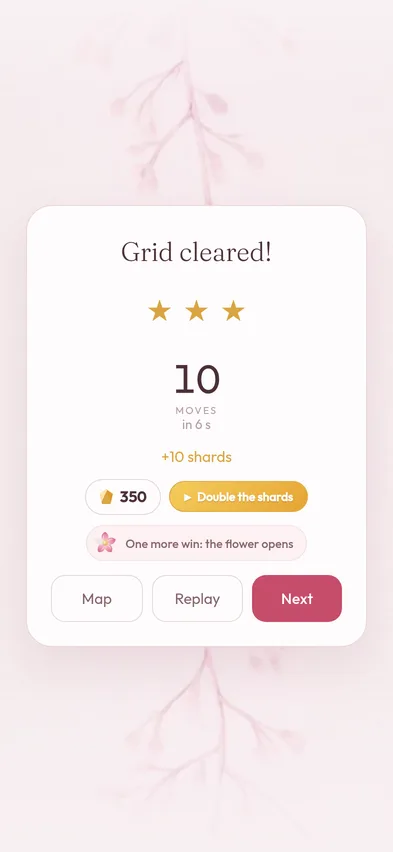
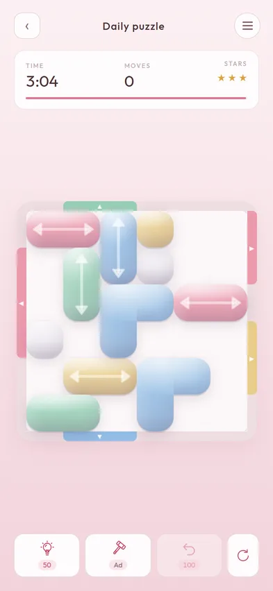

Ici, personne ne vous presse.
Pas de chrono qui s'affole, pas d'adversaire, pas de musique qui pousse. On regarde, on tente, on se trompe, on annule, on recommence. Et d'un coup, on voit. Ce petit déclic quand la solution apparaît, c'est tout le jeu.
Regardez
Une grille, quelques blocs couleur pastel, des portes sur les bords. Prenez le temps d'observer.
Glissez
Amenez un bloc jusqu'à une porte de sa couleur assez large pour lui : il s'en va en douceur.
Écoutez
Chaque sortie sonne une note un peu plus haute. Les bons coups forment une petite mélodie.
1000 niveaux, 50 mondes.
Des cerisiers en fleur au givre de l'hiver, en passant par la glycine, l'eucalyptus et l'érable d'automne. Chaque monde a ses couleurs, sa branche sur la carte, et une idée nouvelle à découvrir.




Ce qui vous attend
- Une idée par monde. Blocs sur rails, verrous et clés, portes à capacité, cases à sens unique… Les règles restent simples, la réflexion s'approfondit.
- Toujours une issue. Chaque niveau a été vérifié par un solveur.
- Un puzzle du jour. Le même pour tout le monde, et un jour sur deux, imaginé par un joueur.
- Votre propre éditeur. Créez vos grilles et partagez-les.
- De vrais instruments. Piano, harpe, hang, kalimba et verres d'eau.
- Une ampoule si vous bloquez. Elle ne devine pas : elle cherche sur votre plateau et montre le coup suivant.
- Hors ligne, sans compte. Connexion Google seulement si vous voulez changer d'appareil.
- Mode daltonien. Chaque couleur a son motif. En français, anglais, espagnol, italien et chinois.
Respirez. Glissez un bloc.
Cinq minutes dans le métro, une demi-heure avant de dormir, un dimanche sous la couette. Quiet Puzzle a été fait pour ces moments-là.
Télécharger surGoogle Play